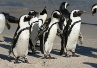
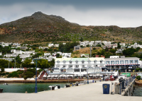
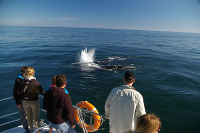

Things To Do
At Waverly / Boulders Beach
The cute little Jackass penguins in their tailcoat costumes are a firm favourite with our visitors. Get here in the morning while the loud and smelly buggers are still in action. While the aquatic birds look rather wobbly on dry land, they transform into black bullets as soon as they break the surface.
If you want to cuddle, stick to the soft toys from the souvenir shop. The real birds do bite.
At Simon’s Town
Simon’s Town is a quiet harbour with a naval base, a rich history, charming shops, restaurants for every taste and more activities than you can do in a day.
- Art galleries
- Historical tours
- Ocean adventures
- Day spas
See: www.simonstown.com
Whale Watching
While you’re on the train, keep an eye out for the marine life. While seals can be seen all year round, spring in Cape Town is whale season. Colossal Southern right whales can be seen frolicking all along the shores of False Bay. Take a pair of binoculars and watch the playful mammals from dry land or book a whale watching tour to get closer to the action. Enquire at any tourism office to make a booking in advance.
